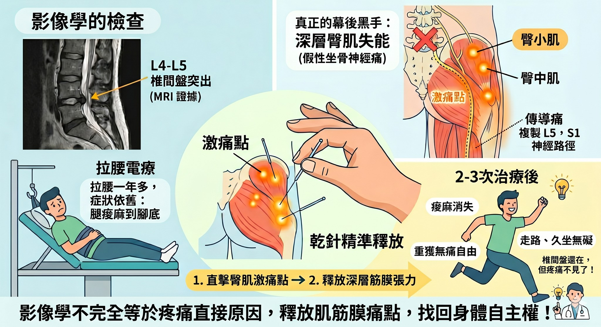

影像學MRI 確診椎間盤突出，但拉腰一年卻沒好？揪出「假性坐骨神經痛」的幕後黑手
【 影像學MRI 確診椎間盤突出，但拉腰一年卻沒好？揪出「假性坐骨神經痛」的幕後黑手 】
「醫師，這是我的 MRI 報告，L4-L5 椎間盤突出。也去拉腰拉了一年多，但為什麼我的腿還是麻到腳底，完全沒有好轉？」
在診間裡，經常看到患者帶著厚厚的病歷與影像光碟，神情充滿無助。彷彿那張 MRI 片子就是一份判決書，宣告著他們的腰椎已經「壞掉」了。
這位患者的麻痛感，從腰臀一路沿著大腿後側、小腿，直直竄到腳底。不能久坐、無法久走，長達一年多的復健與徒手治療，似乎都在原地踏步。
面對如此明確的「影像學證據」，難道真的只能開刀嗎？
－
🔍 破局關鍵：影像學是地圖，但未必是真正兇手
如果神經壓迫是唯一的兇手，為什麼長期的拉腰減壓卻效果不彰？
這其實點出了現代醫學臨床上一個非常重要、卻常被民眾忽略的觀念：「椎間盤突出與腰臀腿疼痛，在影像學上與症狀學上，未必呈現“絕對的”因果關係。」
許多大規模的醫學研究早已證實，即使是完全沒有腰背痛的「健康正常人」，去照 MRI 也常常會發現椎間盤突出或脊柱退化。這意味著，影像學上的「異常」，有時只是身體隨歲月自然老化的痕跡，未必是引發你當下劇烈麻痛的真正元凶。
身為縱觀整體與全人的中醫師，習慣在影像學之外，多問身體一個問題：「這些沿著神經走向的麻痛，有沒有可能是深層肌肉死鎖所引發的『假性神經痛』？」
透過 肌筋膜脈學中醫應用的脈象資訊收集與精確的理學檢查，重新掃描了身體的張力網路，答案赫然浮現：真正的幕後黑手，其實藏在深層的臀部肌群。
患者的「臀中肌」與「臀小肌」，因為長期的代償與疼痛防禦，已經嚴重失能且緊繃死鎖。在解剖力學與肌筋膜疼痛的學理上，臀小肌的激痛點非常狡猾，它所引發的「傳導痛」與「麻感」，會完美複製 L5、S1 神經根壓迫的坐骨神經痛路徑，一路從臀部放射到腳踝。這就是為什麼，一開始都把嫌疑放在腰椎，卻忽略了臀部這個超級代償中樞。
⚡ 乾針精準釋放：從舉步維艱，到重獲輕鬆
既然找到了隱形的枷鎖，便展開了針對性的結構解鎖工程。
第一次治療（直擊核心）： 運用肌筋膜乾針，精準介入失能的臀中肌與臀小肌。就在乾針解除深層肌肉痙攣、釋放筋膜張力的那一刻，神奇的事情發生了。
當下請患者從診療床起身，直接活動並感受前後差異，驚喜地發現：「那種一直被扯住的痠麻感，竟然退去了一大半！」
後續兩次治療（清除餘黨）： 隨著臀部核心張力的解除，繼續沿著力學傳遞的動力鍊往上往下追擊，進一步針對上游臀部的「臀大肌」與「梨狀肌」、下游小腿的「腓腸肌」與「比目魚肌」進行乾針釋放，清除殘留的牽連張力。
大約經過 2 - 3 次的治療，疼痛與酸麻感已大幅消失，日常的行住坐臥已經變得輕鬆自在。原本折磨了一年多的腰臀、大腿後側與小腿痠麻刺痛，已經完全不影響日間行動。目前只剩下腳底半外側還有一丁點微弱的麻感，最重要的是，走路與坐著的時間大幅拉長，工作與生活幾乎回到了正常軌道。
－
👨⚕️ 醫師的成就與感言
我沒有把突出的椎間盤塞回去(事實上，要塞回去也很不容易)，但疼痛卻能大幅改善，甚至不痛了。
這完美詮釋了，影像學報告與症狀上並不是絕對的因果關係。
透過肌筋膜脈學的精準定位，結合乾針的深層釋放，也能在看似無解的疼痛迷宮中，幫身體找回無痛的自由。
#椎間盤突出 #坐骨神經痛 #假性神經痛 #腳麻 #肌筋膜乾針
太初中醫診所 東門中醫
中醫師 黃彥鈞
－
📚 實證醫學參考文獻 (References)：
1. Sánchez-Infante, J., et al. (2025). Prevalence of Myofascial Trigger Points in Patients with Radiating and Non-Radiating Low Back Pain: A Systematic Review. Journal of Clinical Medicine.
(2025 年發表的最新系統性回顧研究進一步揭示：在伴隨下肢放射痛（疑似坐骨神經痛）的患者中，臀部與骨盆周邊肌肉存在極高比例的「活躍型肌筋膜激痛點」。這份最新研究再次提醒臨床醫師，必須高度重視肌筋膜網路在神經牽涉痛中扮演的關鍵致病角色，而非單純歸咎於脊椎影像異常。)
2. Brinjikji, W., et al. (2015). Systematic literature review of imaging features of spinal degeneration in asymptomatic populations. American Journal of Neuroradiology.
(神經放射學權威文獻指出：在「完全沒有背痛」的無症狀健康人群中，有極高比例在 MRI 上呈現椎間盤突出。這強力證實了影像學的異常，不應直接與臨床疼痛症狀劃上絕對的因果等號。)
3. Travell, J. G., & Simons, D. G. (1992). Myofascial Pain and Dysfunction: The Trigger Point Manual.
(經典權威著作指出：臀小肌（Gluteus Minimus）的肌筋膜激痛點，會產生沿大腿後側、小腿延伸至腳踝的強烈傳導麻痛，臨床上極易與腰椎間盤突出引發的真實神經壓迫混淆，被稱為「假性坐骨神經痛（Pseudo-sciatica）」。)
【 ⚠️ 免責聲明與就醫提醒 】
本文分享之臨床案例皆已進行去識別化與隱私保護處理。下肢麻痛的成因複雜，並非所有患者皆僅為肌筋膜問題。若有相關症狀，請務必尋求受過正規訓練之專業醫師，進行影像學與理學的雙重鑑別診斷，方能制定最合適的治療方針。治療效果因人而異，請與您的醫師充分討論。
